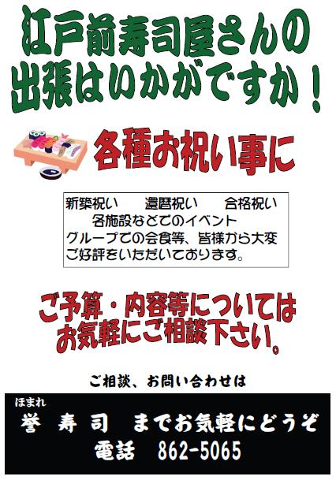
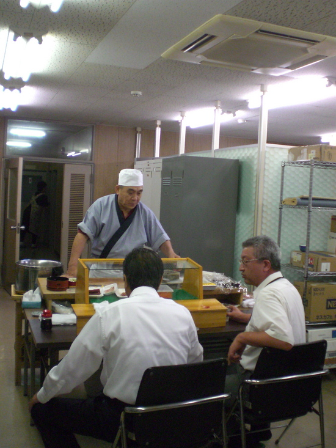
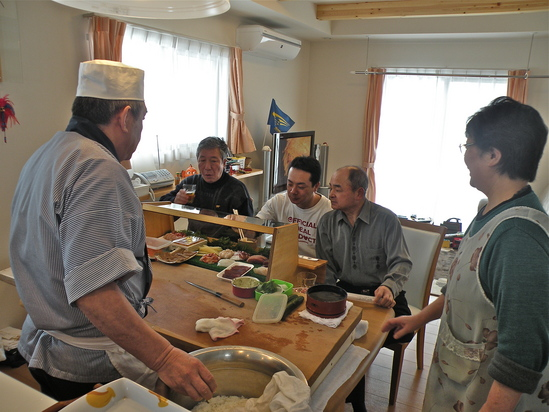
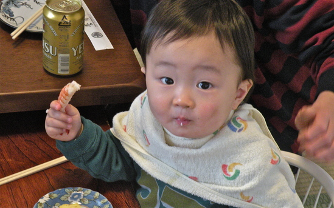
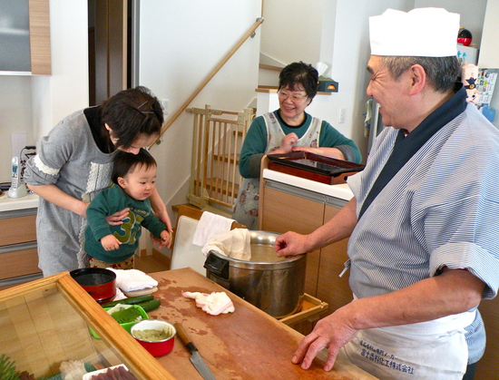

ようこそ
私たちは、皆を歓迎します。秋田市の中心部近くに位置し、誉寿司は40年以上にわたって家族のタッチで優れたサービスを提供してきました。で来ると私たちの有名な穴子（あなご）寿司を試してみてください。
電話とFAX番号
018-862-5065
〒010-0913
秋田県秋田市保戸野鉄砲町2-21
営業時間
11:00～14:00 16:30～24:00
※年中無休
予約
あなたが大規模なグループで食べたい、あるいはあなたのパーティーをホスト誉寿司持っている場合、それは先に予約をする時間の私達に連絡することをお勧めします。あなたは電子メールまたは電話にてご連絡ください。
hello@homarezushi.com
018-862-5065
空弁
秋田空港２階売店にて限定発売しております。
数量限定のため、お早めにご購入ください。
出張寿司
出張範囲
秋田市全域
※由利本荘市、大仙市、潟上市などの秋田市周辺地域への出張に関しましては、お気軽にご相談ください。
出張費用
お気軽にご相談ください。
※秋田市内の出張に関しましては交通費をいただいておりません。
店主手作りのカウンターを使用し、この様な形で出張させて頂きます！！！
会議の後の会食にというご依頼を頂き、出張させて頂きました。 『久しぶりに握り立てのお寿司をたべたなぁ～！』と好評でした。 江戸前寿司屋のカウンターは、敷居が高くて、、、という方も少なくないかとは思いますが、こんな形で職人と会話をしながら召し上がって頂くと、また一段と美味しくなるんですよ♪
さてさて、この度〝新築祝い〟への出張のご依頼を頂き伺ってまいりました。 江戸前寿司が自宅に？！ まさに！@HOMEで職人握り立てのお寿司を召し上がって頂けます！
こんな可愛いお客さまにも最高のお寿司を提供いたします！
将来の夢はお寿司屋さんかな？ こんな風にお客様と職人が身近に触れ合えることも、この出張の魅力です。 みなさんの美味しそうに召し上がってくれる笑顔が私達の活力になるんですよ！！